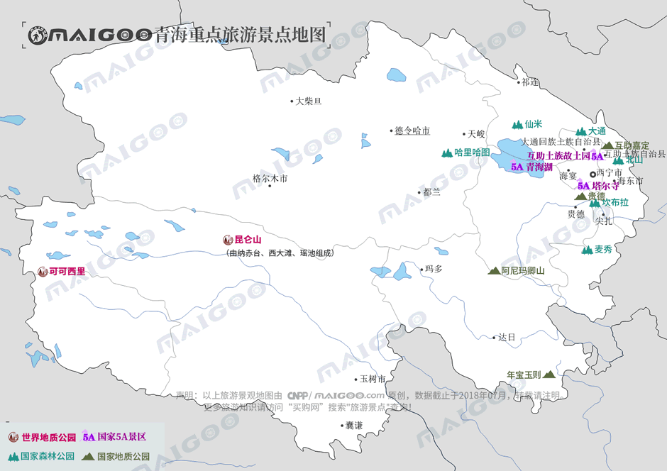

| | | | | |
| - | - | - | - | - |
|<b>别名</b>|西海、中华水塔||<b>著名景点</b>|青海湖、塔尔寺、昆仑山、可可西里、三江源|
|<b>行政区类别</b>|省||<b>机 场</b>|西宁曹家堡机场、格尔木机场、玉树巴塘机场、果洛玛沁机场等|
|<b>所属地区</b>|中国西北||<b>火车站</b>|西宁站、西宁西站、格尔木站|
|<b>下辖地区</b>|2个市、6个自治州||<b>车牌代码</b>|青A-青H|
|<b>电话区号</b>|0971-0979||<b>GDP</b>|2642.8亿元（2017年）|
|<b>邮政区码</b>|810000-817200||<b>人均GDP</b>|44348元人民币（2017年）|
|<b>地理位置</b>|青藏高原东北部||<b>主要河流</b>|长江、黄河、澜沧江等|
|<b>面 积</b>|72.10万平方公里||<b>高等学府</b>|青海大学、青海师范大学等|
|<b>人 口</b>|598.38万（2017年常住人口）||<b>特 产</b>|冬虫夏草、藏雪莲、藏茵陈等|
|<b>方 言</b>|中原官话-秦陇片、藏语（安多、康巴方言）等||<b>省委书记</b>|王建军|
|<b>气候条件</b>|高原大陆性气候||<b>代省长</b>|刘宁|
| <b>青海生活文化</b> | <b>青海特色文化</b> | <b>青海曲艺文化</b> | <b>青海建筑文化</b> | <b>青海宗教文化</b> |
| - | - | - | - | - |
| <a href="javascript:;" onclick="live(this);">习俗/民俗</a> | <a href="javascript:;" onclick="feature(this);">青海花儿</a> | <a href="javascript:;" onclick="art(this);">藏戏</a> | <a href="javascript:;" onclick="building(this);">青海传统建筑</a> | <a href="javascript:;" onclick="religion(this);">青海庙宇/庙会</a> |
| <a href="javascript:;" onclick="live(this);">方言文化</a> | <a href="javascript:;" onclick="feature(this);">酥油花</a> | - | - | - |
| <a href="javascript:;" onclick="live(this);">节日文化</a> | <a href="javascript:;" onclick="feature(this);">热贡艺术</a> | - | - | - |
| <a href="javascript:;" onclick="live(this);">嫁娶文化</a> | <a href="javascript:;" onclick="feature(this);">青海藏毯</a> | - |-|-|
| <a href="javascript:;" onclick="live(this);">饮食文化</a> | <a href="javascript:;" onclick="feature(this);">青海熬茶</a> | -|-|-|
| <a href="javascript:;" onclick="live(this);">青海禁忌</a> | <a href="javascript:;" onclick="feature(this);">青海彩陶</a> |-| -|-|
## <i class="fa fa-file-text-o"></i>&nbsp;目录（Table of Contents）
+ [I. 总路线图（参考"内蒙古"）](neimenggu.html)
+ [II. 景点](#two)
+ [III. 路线规划（参考"内蒙古"）](neimenggu.html)
<h2 id="two"><i class="fa fa-star-o"></i>&nbsp;景点</h2>
